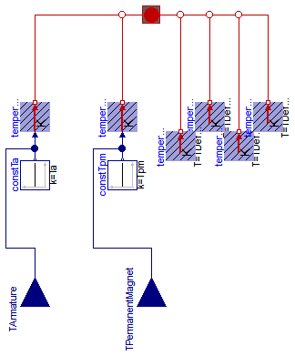
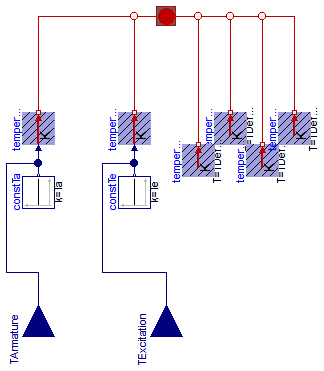
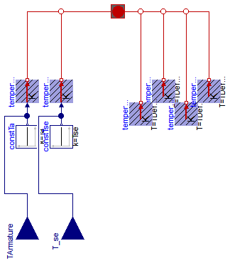

Extends from Modelica.Icons.VariantsPackage (Icon for package containing variants).
| Name | Description |
|---|---|
| ThermalAmbientDCPM | Thermal ambient for DC machine with permanent magnets |
| ThermalAmbientDCEE | Thermal ambient for DC machine with electrical excitation |
| ThermalAmbientDCSE | Thermal ambient for DC machine with series excitation |
| ThermalAmbientDCCE | Thermal ambient for DC machine with compound excitation |

Extends from Machines.Interfaces.DCMachines.PartialThermalAmbientDCMachines (Partial thermal ambient for DC machines).
| Type | Name | Default | Description |
|---|---|---|---|
| Boolean | useTemperatureInputs | false | If true, temperature inputs are used; else, temperatures are constant |
| Temperature | Ta | Temperature of armature [K] | |
| Temperature | Tpm | Temperature of permanent magnet [K] |
| Type | Name | Description |
|---|---|---|
| input RealInput | TArmature | Temperature of armature |
| input RealInput | TPermanentMagnet | Temperature of permanent magnet |
model ThermalAmbientDCPM
"Thermal ambient for DC machine with permanent magnets"
import Modelica;
extends Machines.Interfaces.DCMachines.PartialThermalAmbientDCMachines(
redeclare final Machines.Interfaces.DCMachines.ThermalPortDCPM
thermalPort);
parameter Modelica.SIunits.Temperature Tpm(start=TDefault)
"Temperature of permanent magnet";
output Modelica.SIunits.HeatFlowRate Q_flowPermanentMagnet = temperaturePermanentMagnet.port.Q_flow
"Heat flow rate of permanent magnets";
output Modelica.SIunits.HeatFlowRate Q_flowTotal=
Q_flowArmature + Q_flowCore + Q_flowStrayLoad + Q_flowFriction + Q_flowBrush + Q_flowPermanentMagnet;
Modelica.Thermal.HeatTransfer.Sources.PrescribedTemperature
temperaturePermanentMagnet;
Modelica.Blocks.Sources.Constant constTpm(final k=Tpm) if not useTemperatureInputs;
Modelica.Blocks.Interfaces.RealInput TPermanentMagnet if useTemperatureInputs
"Temperature of permanent magnet";
equation
connect(temperaturePermanentMagnet.port, thermalPort.heatPortPermanentMagnet);
connect(constTpm.y, temperaturePermanentMagnet.T);
connect(TPermanentMagnet, temperaturePermanentMagnet.T);
end ThermalAmbientDCPM;

Extends from Machines.Interfaces.DCMachines.PartialThermalAmbientDCMachines (Partial thermal ambient for DC machines).
| Type | Name | Default | Description |
|---|---|---|---|
| Boolean | useTemperatureInputs | false | If true, temperature inputs are used; else, temperatures are constant |
| Temperature | Ta | Temperature of armature [K] | |
| Temperature | Te | Temperature of (shunt) excitation [K] |
| Type | Name | Description |
|---|---|---|
| input RealInput | TArmature | Temperature of armature |
| input RealInput | TExcitation | Temperature of (shunt) excitation |
model ThermalAmbientDCEE
"Thermal ambient for DC machine with electrical excitation"
extends Machines.Interfaces.DCMachines.PartialThermalAmbientDCMachines(
redeclare final Machines.Interfaces.DCMachines.ThermalPortDCEE
thermalPort);
parameter Modelica.SIunits.Temperature Te(start=TDefault)
"Temperature of (shunt) excitation";
output Modelica.SIunits.HeatFlowRate Q_flowExcitation = temperatureExcitation.port.Q_flow
"Heat flow rate of (shunt) excitation";
output Modelica.SIunits.HeatFlowRate Q_flowTotal=
Q_flowArmature + Q_flowCore + Q_flowStrayLoad + Q_flowFriction + Q_flowBrush + Q_flowExcitation;
Modelica.Thermal.HeatTransfer.Sources.PrescribedTemperature temperatureExcitation;
Modelica.Blocks.Sources.Constant constTe(final k=Te) if not useTemperatureInputs;
Modelica.Blocks.Interfaces.RealInput TExcitation if
useTemperatureInputs
"Temperature of (shunt) excitation";
equation
connect(constTe.y, temperatureExcitation.T);
connect(TExcitation, temperatureExcitation.T);
connect(temperatureExcitation.port, thermalPort.heatPortExcitation);
end ThermalAmbientDCEE;

Extends from Machines.Interfaces.DCMachines.PartialThermalAmbientDCMachines (Partial thermal ambient for DC machines).
| Type | Name | Default | Description |
|---|---|---|---|
| Boolean | useTemperatureInputs | false | If true, temperature inputs are used; else, temperatures are constant |
| Temperature | Ta | Temperature of armature [K] | |
| Temperature | Tse | Temperature of series excitation [K] |
| Type | Name | Description |
|---|---|---|
| input RealInput | TArmature | Temperature of armature |
| input RealInput | T_se | Temperature of series excitation |
model ThermalAmbientDCSE
"Thermal ambient for DC machine with series excitation"
extends Machines.Interfaces.DCMachines.PartialThermalAmbientDCMachines(
redeclare final Machines.Interfaces.DCMachines.ThermalPortDCSE
thermalPort);
parameter Modelica.SIunits.Temperature Tse(start=TDefault)
"Temperature of series excitation";
output Modelica.SIunits.HeatFlowRate Q_flowSeriesExcitation = temperatureSeriesExcitation.port.Q_flow
"Heat flow rate of series excitation";
output Modelica.SIunits.HeatFlowRate Q_flowTotal=
Q_flowArmature + Q_flowCore + Q_flowStrayLoad + Q_flowFriction + Q_flowBrush + Q_flowSeriesExcitation;
Modelica.Thermal.HeatTransfer.Sources.PrescribedTemperature temperatureSeriesExcitation;
Modelica.Blocks.Sources.Constant constTse(final k=Tse) if not useTemperatureInputs;
Modelica.Blocks.Interfaces.RealInput T_se if useTemperatureInputs
"Temperature of series excitation";
equation
connect(constTse.y, temperatureSeriesExcitation.T);
connect(T_se, temperatureSeriesExcitation.T);
connect(temperatureSeriesExcitation.port, thermalPort.heatPortSeriesExcitation);
end ThermalAmbientDCSE;
Extends from Machines.Interfaces.DCMachines.PartialThermalAmbientDCMachines (Partial thermal ambient for DC machines).
| Type | Name | Default | Description |
|---|---|---|---|
| Boolean | useTemperatureInputs | false | If true, temperature inputs are used; else, temperatures are constant |
| Temperature | Ta | Temperature of armature [K] | |
| Temperature | Te | Temperature of (shunt) excitation [K] | |
| Temperature | Tse | Temperature of series excitation [K] |
| Type | Name | Description |
|---|---|---|
| input RealInput | TArmature | Temperature of armature |
| input RealInput | T_e | Temperature of (shunt) excitation |
| input RealInput | T_se | Temperature of series excitation |
model ThermalAmbientDCCE
"Thermal ambient for DC machine with compound excitation"
extends Machines.Interfaces.DCMachines.PartialThermalAmbientDCMachines(
redeclare final Machines.Interfaces.DCMachines.ThermalPortDCCE
thermalPort);
parameter Modelica.SIunits.Temperature Te(start=TDefault)
"Temperature of (shunt) excitation";
parameter Modelica.SIunits.Temperature Tse(start=TDefault)
"Temperature of series excitation";
output Modelica.SIunits.HeatFlowRate Q_flowShuntExcitation = temperatureShuntExcitation.port.Q_flow
"Heat flow rate of (shunt) excitation";
output Modelica.SIunits.HeatFlowRate Q_flowSeriesExcitation = temperatureSeriesExcitation.port.Q_flow
"Heat flow rate of series excitation";
output Modelica.SIunits.HeatFlowRate Q_flowTotal=
Q_flowArmature + Q_flowCore + Q_flowStrayLoad + Q_flowFriction + Q_flowBrush + Q_flowShuntExcitation + Q_flowSeriesExcitation;
Modelica.Thermal.HeatTransfer.Sources.PrescribedTemperature temperatureShuntExcitation;
Modelica.Blocks.Sources.Constant constTe(final k=Te) if not useTemperatureInputs;
Modelica.Blocks.Interfaces.RealInput T_e if useTemperatureInputs
"Temperature of (shunt) excitation";
Modelica.Thermal.HeatTransfer.Sources.PrescribedTemperature temperatureSeriesExcitation;
Modelica.Blocks.Sources.Constant constTse(final k=Tse) if not useTemperatureInputs;
Modelica.Blocks.Interfaces.RealInput T_se if useTemperatureInputs
"Temperature of series excitation";
equation
connect(constTe.y, temperatureShuntExcitation.T);
connect(T_e, temperatureShuntExcitation.T);
connect(constTse.y, temperatureSeriesExcitation.T);
connect(T_se, temperatureSeriesExcitation.T);
connect(temperatureSeriesExcitation.port, thermalPort.heatPortSeriesExcitation);
connect(temperatureShuntExcitation.port, thermalPort.heatPortShuntExcitation);
end ThermalAmbientDCCE;